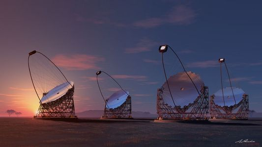
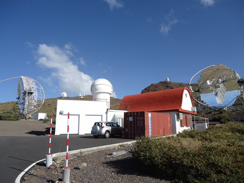
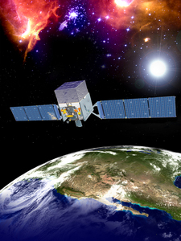
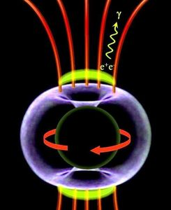
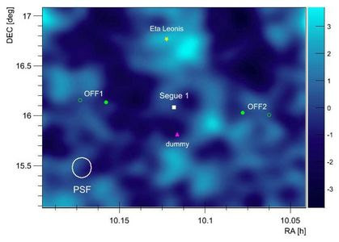
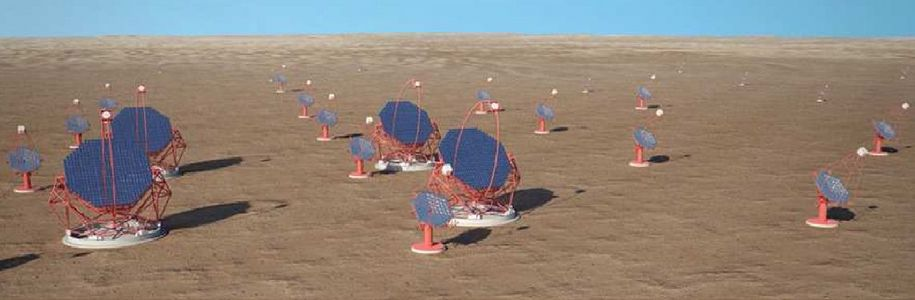
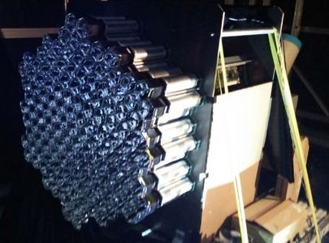

High Energy Gamma-ray Group - Cosmic-ray Group, Kyoto University


Cosmic-ray Group Japanese English


CTA LST

MAGIC telescope

Fermi satellite, copyright: NASA
Research
Our research topic is the high energy astrophysics with gamma-ray instruments such as CTA, MAGIC and Fermi.
Research on High Energy Phenomena in the Universe with Very High Energy Gamma-ray Observations
In the Universe, various objects including both galactic and extragalactic origin emit electromagnetic radiation with different wave length, which corresponds to different energy. We can understand various astrophysical phenomena in the Universe by observing such electromagnetic radiation. Observation wave length widely ranges from radio, optical and infrared, which are lower energy band, to X-ray and gamma-ray, which are higher energy band. Our group researches astrophysical phenomena by observing very high energy gamma-ray (E > 100 GeV), the highest energy band in electromagnetic observations.
Supernova explosions or relativistic jets outflowing from active galactic nuclei are thought to have a capability to accelerate protons and electrons to much higher energy. Such accelerated particles interact with surrounding environments and result in gamma-ray emissions. Thus gamma-ray observations provide us the method to probe such high energy phenomena that accelerate particles up to high energy.
There exist various kinds of gamma-ray emitters like galactic objects such as supernova remnants, pulsars and binary systems and extragalactic objects such as active galactic nuclei and gamma-ray bursts. We can investigate extreme activities in these objects by probing with the gamma-ray.
From the Universe, a lot of high energy protons or nuclei called cosmic-rays are falling into the earth. The energy of cosmic-rays widely ranges from 10^8 eV to 10^20 eV. While LHC can accelerate protons to make collision at the energy of up to 10^13 eV in the center-of-momentum frame, cosmic-rays are accelerated to much higher energy by seven orders of magnitude at the maximum than the energy humans have achieved in the accelerator experiments. The existence of the cosmic-rays was found in 1912 and even 100 years after the discovery it is not fully understood where these high energy particles are accelerated. Accelerated cosmic-rays can emit gamma-rays by interacting with surrounding environments and thus through gamma-ray observations we can search "the enormous accelerator in the Universe", which are producing cosmic-rays.
Active galactic nuclei (AGN) are one of the candidates for the cosmic accelerator. AGNs hold a super massive black hole with millions to billions solar mass at its center and the gas falling into the black hole releases the gravitational potential energy resulting in electromagnetic radiation. Some AGNs are observed with the jets, relativistic outflows of plasma, although the mechanism of the jet formation is not clear. Gamma-ray observations of AGNs can probe the particle acceleration around the black hole or physics in the relativistic jets.
The particles in the standard theory we have discovered so far like protons or neutrons explain only 5% in the composition of the Universe. The left 27% is the dark matter, the particles outside the standard theory so-far undetected and 68% is so-called dark energy. The dark matter is thought to have concentrated in the regions with high density by the gravitational interaction in the early Universe and have played a important role in the formation of the large scale structure in the Universe. The dark matter can produce gamma-ray through the annihilation with the anti dark matter. Thus we can search the signals from the dark matter annihilation by observing the regions assumed to have high dark matter density such as the Galactic Center or dwarf galaxies.
Our group is working on the researches through the observations to investigate the various objects such as supernova remnants, pulsars, binary systems, AGNs and gamma-ray bursts and also investigate the new physics such as the origin of the cosmic-ray, acceleration around the black hole and the indirect dark matter search.

Aleksic, J. et al., A&A 541, 2012
W51C, the supernova remnant observed with the MAGIC telescopes. The color scale represents the intensity map for the gamma-ray emission, the green contour for the radio emission from the molecular clouds and the red dashed circle for the region in which the supernova remnant is interacting with the gas. The observed gamma-rays suggests that the accelerated cosmic-rays in the supernova remnant are interacting with the molecular clouds and are producing gamma-rays.

Aleksic, J. et al., Science 346, 2014
The schematic view of the particle acceleration model around the super massive black hole located in the center of the active galactic nuclei IC 310. The MAGIC telescopes observed the gamma-ray flare from IC 310, which showed the fast variability shorter than 5 minutes. This extremely fast variability suggests the pulsar-like particle acceleration by the electric field across the gaps of a charge-separated magnetosphere anchored in the ergosphere of the rotating black hole.

Aleksic, J. et al., JCAP 02, 2014
The significance map for the gamma-ray emission around Segue 1, the dwarf galaxy observed with the MAGIC telescopes. The MAGIC observed Segue 1 for about 160 hours for the purpose of the indirect dark matter search. No significant gamma-ray emission was detected and the result gave the upper limit on the cross section for the dark matter annihilation.
Development of the Camera for the Gamma-ray Telescope
High energy gamma-rays are observed through the pair production with material. Detectors on satellites are suitable for the energy from 10 MeV to 100 GeV and the most successful instrument for this energy band is the Fermi-LAT currently operating in the space. Gamma-rays with the energy higher than 100 GeV are observed by much larger instruments called imaging atmospheric air Cherenkov telescopes constructed on the ground. Very high energy gamma-rays coming into the Earth atmosphere produce the extended air shower, the particle shower of electrons and positrons, through the pair productions. The electrons and positrons in the air shower emit Cherenkov radiation, the blue light produced when a particle runs faster than the speed of the light in the medium. The air Cherenkov telescopes collect these Chrenkov photons with their large mirrors and the camera located on the focal plane of the mirror takes a image of the air shower to reconstruct the incoming gamma-ray.
The technic of the air Cherenkov telescopes has been developed since the first very high energy gamma-ray detection of Crab nebula by the Whipple telescope in 1989. At present, several air Cherenkov telescopes such as H.E.S.S., MAGIC and VERITAS has been detected more than 100 very high energy gamma-ray sources. Our group is a collaboration member of MAGIC and is working on the MAGIC data analysis. On the other hand we also participate in CTA and have been developing the gamma-ray camera for CTA, the air Cherenkov telescopes in the next generation. CTA is the very high energy gamma-ray observatory with the extremely high sensitivity constructed both in the northern and southern hemispheres to observe the entire sky, which consists of the array of tens of air Chrenkov telescopes in the area of about 10 km^2 and achieves one order better sensitivity than the current generation instruments.
LST, the telescope with the large mirror dish with 23 m diameter, is one of the several types of telescopes within the CTA array. LST observes gamma-rays in the lowest energy band in the CTA coverage, around 100 GeV partly overlapping with the energy coverage by satellite instruments. Four LSTs are constructed in each northern and southern site and eight LSTs in total. We have developed the focal plane camera for LST, especially the readout electronics of the photomultiplier tubes (PMTs), the focal plane photo detector. On the focal plane camera of LST, 1855 PMTs are assembled and each seven PMTs are connected to the single readout board forming a single camera module. The readout board samples the signal waveform from the seven PMTs, digitizes it and sends the data to the server through the Gigabit Ethernet. Cherenkov photons from air showers arrive in a very short duration like nano seconds and the fast readout electronics we have developed samples these fast flashing signals at a speed of GHz.
CTA is a world wide collaboration with more than 1000 researchers to construct "very high energy gamma-ray telescopes with the best sensitivity in the world", perform observations and work on astrophysical studies. Our group plays a main role in the development of the camera for this gamma-ray telescopes with extreme sensitivity cooperating with the co-researchers in the world. The construction of the first LST is planned to start in 2016 at Canary island, Spain and the first light will be in 2017.

http://www.cta-observatory.jp/
The CAD image of CTA. The array consists of the several types of telescopes with different sizes of mirrors and achieves the wide energy coverage and the extreme sensitivity.

The PMT-signal readout electronics for the camera of CTA-LST. The signal waveforms from seven PMTs are sampled at a speed of GHz and the digitized data are transmitted through the Gigabit Ethernet.

The mini camera composed of 19 modules of the readout boards. The actual scale of the camera is 265 modules with 1855 PMTs.
Members
| Hidetoshi Kubo | associate professor |
| Toshihiro Fujii | program-specific assistant professor |
| Shu Masuda | OD |
| Seiya Nozaki | D1 |
| Joe Hirako | M2 |
| Tomohiko Oka | M1 |
| Yuki Kajiwara | M1 |